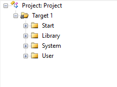
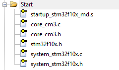
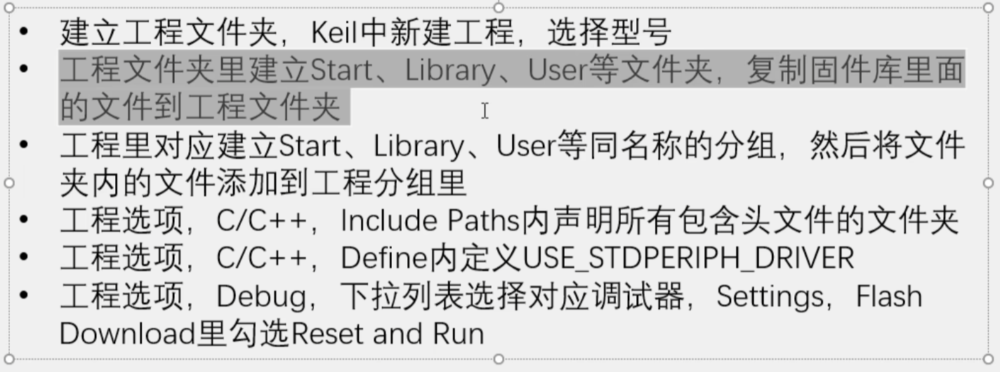
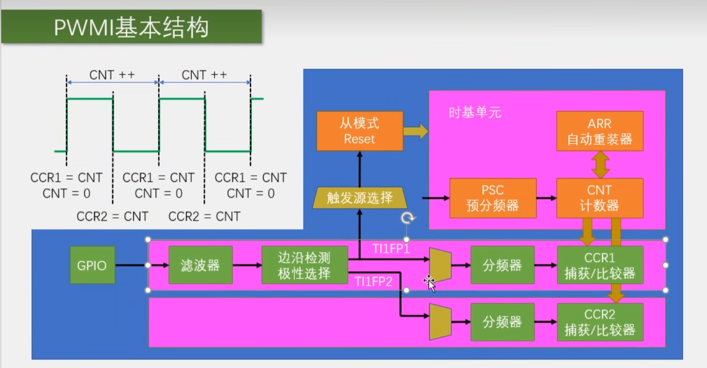
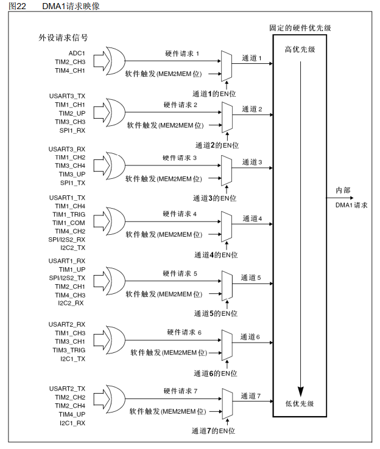

本文最后更新于 2026年8月1日 下午
😄工程模板
1、江协科技模板


Start文件夹存放1启动文件，不同型号选择不同的启动文件；2-3是内核的寄存器描述函数；4是配置寄存器和对应地址的；5-6是用来配置时钟的。复制过来的文件要
Add Files to Group XXX。
User文件夹存放用户代码，
main.c是主函数。其他文件是配置库函数的包含关系和用来存放终端函数的it文件。
Library文件夹用来存放标准库文件。
System用来存放延时函数。
后续还有
Hardware文件夹用来存放外设驱动库文件。

1.1添加头文件路径
魔术棒->C/C++/Include Paths
1.2时钟树
APB（Advanced Peripheral Bus） 总线负责连接各种外设。APB2 的频率通常比 APB1 高。脉搏 ，决定了芯片运行的速度。而**锁相环（PLL）**则是这个系统里的“加压泵”，负责把低频的晶振信号翻倍成高性能的时钟。
1.2.1 信号源：晶振（HSE）
一切的开始都是外部高速晶振（HSE） 。对于典型的 STM32F103 开发板，你通常会在电路板上看到一个写着 8.000 的金属小方块。
频率 ：8 MHz 8\text{MHz} 8 MHz 地位 ：它是最稳定的物理基准，但在8 MHz 8\text{MHz} 8 MHz
1.2.2 加压泵：锁相环（PLL）
为了达到 的高性能，我们需要 PLL（Phase-Locked Loop） 登场。
作用 ：倍频 。计算公式 ：在标准配置下，它会先将 HSE 的 进行 1 分频（即保持 ），然后通过 PLL 锁相环进行 9 倍频 。结果 ：8 MHz × 9 = 72 MHz 8\text{MHz} \times 9 = 72\text{MHz} 8 MHz × 9 = 72 MHz 72 MHz 72\text{MHz} 72 MHz SYSCLK（系统时钟） 。
1.2.3 分配站：各个总线与外设的频率关系
72 MHz 72\text{MHz} 72 MHz
HCLK (高性能总线时钟 - AHB)
倍数 ：通常是 SYSCLK 的 1 分频。频率 ： 72 MHz 72\text{MHz} 72 MHz 挂载对象 ：内存（Flash/RAM）、DMA。
PCLK2 (高速外设时钟 - APB2)
倍数 ：通常是 HCLK 的 1 分频。频率 ： 72 MHz 72\text{MHz} 72 MHz 对应外设 ：GPIO、ADC、USART1、TIM1。注意 ：ADC 有个特殊的 6 或 8 分频器，因为它最高只能跑14 MHz 14\text{MHz} 14 MHz
PCLK1 (低速外设时钟 - APB1)
倍数 ：强制要求必须 ，所以通常设为 HCLK 的 2 分频 。频率 ： 72 MHz / 2 = 36 MHz 72\text{MHz} / 2 = 36\text{MHz} 72 MHz /2 = 36 MHz 对应外设 ：USART2/3、I2C、CAN、通用定时器（TIM2-4）。
1.2.4 总结：频率层级表
时钟名称
信号来源
典型频率
逻辑关系
HSE 外部晶振
8 MHz 8\text{MHz} 8 MHz 原始输入
PLLCLK HSE 倍频系数
72 MHz 72\text{MHz} 72 MHz 锁相环输出
SYSCLK PLLCLK
72 MHz 72\text{MHz} 72 MHz 芯片大脑的主频
PCLK2 SYSCLK / 1
72 MHz 72\text{MHz} 72 MHz APB2 外设用
PCLK1 SYSCLK / 2
36 MHz 36\text{MHz} 36 MHz APB1 外设用
2、GPIO输入输出
1 2 3 4 5 6 RCC_APB2PeriphClockCmd(RCC_APB2Periph_GPIOA, ENABLE);
1 2 GPIO_ResetBits(GPIOA, GPIO_Pin_0);
3、外部中断
中断：在主程序运行过程中，出现了特定的中断触发条件（中断源），使得CPU暂停当前正在运行的程序，转而去处理中断程序，处理完成后又返回原来被暂停的位置继续运行。
68个可屏蔽中断通道，包含EXTI、TIM、ADC、USART、SPI、I2C、RTC等多个外设。
使用NVIC统一管理中断，每个中断通道都拥有16个可编程的优先等级，可对优先级进行分组，进一步设置抢占优先级和响应优先级。抢占优先级可以决定中断嵌套，响应优先级可以决定优先级排队。
中断向量本质上就是一个地址（指针），它指向了处理这个紧急事件的函数（即中断服务程序，ISR）在内存里的起始位置。由于 STM32 有很多中断（复位、NMI、各种外设中断），CPU 需要一个清单来管理它们。这就是中断向量表（Interrupt Vector Table）。
AFIO主要用来引脚复用和中断引脚配置。
GPIO->AFIO->EXTI->NVIC->CPU
1 2 3 4 5 6 7 8 9 10 11 12 13 14 15 16 17 18 19 20 21 22 23 24 25 26 27 28 29 30 31 32 33 34 35 36 37 38 39 RCC_APB2PeriphClockCmd(RCC_APB2Periph_GPIOB, ENABLE);1 ;1 ;void EXTI15_10_IRQHandler (void ) if (EXTI_GetITStatus(EXTI_Line14) == SET) if (GPIO_ReadInputDataBit(GPIOB, GPIO_Pin_14) == 0 )
简单来说，STM32 用 4 位（bit） 来表示一个中断的优先级。这 4 位被划分为两个部分：抢占优先级（Preemption Priority） 和 响应优先级（Sub Priority，也叫子优先级） 。
3.1 两个优先级的区别
3.2 优先级分组（Grouping）
由于总共只有 4 位，你需要决定这 4 位里，“抢占”占几位，“响应”占几位。STM32 提供了 5 种分组方式：
分组方式
抢占优先级位（位宽）
响应优先级位（位宽）
抢占优先级范围
响应优先级范围
第 0 组 0 位
4 位
0（无抢占）
0 - 15
第 1 组 1 位
3 位
0 - 1
0 - 7
第 2 组 2 位
2 位
0 - 3
0 - 3
第 3 组 3 位
1 位
0 - 7
0 - 1
第 4 组 4 位
0 位
0 - 15
0（无响应）
3.3 重要规则：数字越小，优先级越高
不管是哪种优先级，0 是最高级，15 是最低级 。这就像特种兵编号，001 永远比 015 厉害。
3.4 为什么要在代码里先设置分组？
在标准库（STM32STL）中，你通常会在 main() 函数的最开始看到这一句：NVIC_PriorityGroupConfig(NVIC_PriorityGroup_2);
为什么要先写这一句？
全局性 ：在一个工程中，优先级分组只能设置一次 。一旦确定了是“2位抢占+2位响应”，后续所有的外设（串口、定时器等）都要遵循这个规则。防止混乱 ：如果你不设分组，系统会有一个默认值。如果你在串口初始化里按“组2”写优先级，而在定时器初始化里按“组3”写，系统逻辑就会发生不可预知的错误。
4.定时器
在 STM32 的开发中，TIM（Timer/定时器） 是功能最强大、使用频率最高的外设之一。它不仅仅是用来计时的“闹钟”，更是产生 PWM 波形（控制电机、舵机）、测量输入频率（编码器接口）的核心工具。
STM32F103 的定时器根据功能复杂程度分为三类：高级定时器 、通用定时器 和 基本定时器 。定时器的时钟源可以来自内部或者外部（GPIO的跳变也可以当作时钟源）。
定时器的分类
类型
实例
主要功能
高级定时器 TIM1, TIM8
包含通用定时器所有功能，外加死区生成、互补输出、刹车输入（专为电机控制设计）。挂载在 APB2 总线。
通用定时器 TIM2, TIM3, TIM4, TIM5
具有定时、输出比较（PWM）、输入捕获（测量频率/占空比）、级联等功能。挂载在 APB1 总线。
基本定时器 TIM6, TIM7
只有最基本的定时功能，没有外部通道。常用于触发 DAC。挂载在 APB1 总线。
4.1 定时中断
1 2 3 4 5 6 7 8 9 10 11 12 13 14 15 16 17 18 19 20 21 22 23 24 25 26 27 28 29 30 31 32 33 34 35 36 37 38 void Timer_Init (void ) 10000 - 1 ;7200 - 1 ; 0 ; 2 ;1 ;void TIM2_IRQHandler (void ) if (TIM_GetITStatus(TIM2, TIM_IT_Update) == SET)
STM32 的定时器参数都有两层寄存器：
核心逻辑： 只有当发生 更新事件(Update Event) 时，硬件才会把“候补席”的值搬到“正式位”上。
如果没有这个机制，假设定时器正在高速计数，你突然改了 ARR 且改后的值比当前计数值还小，计数器可能就“飞”了（永远等不到等于 ARR 的那一刻），导致系统崩溃。
为什么会有程序刚初始化就直接进入中断：这是因为在标准库函数 TIM_TimeBaseInit 的内部，为了让你写的 PSC 和 ARR 立刻生效，它最后有一行代码：TIMx->EGR = TIM_PSCReloadMode_Immediate;手动触发一个软件更新事件（UG 位）。这个事件强制将你刚才设定的 PSC 和 ARR 搬进影子寄存器。既然触发了“更新事件”，而你又开启了“更新中断”，那么硬件就会认为：“哦，产生更新了，快去执行中断函数吧！” 所以才会出现“刚初始化就进中断”的现象。解决办法就是在 TIM_TimeBaseInit 之后，手动清除一次中断标志位 ，代码是：TIM_ClearFlag(TIM2, TIM_FLAG_Update); 。
4.2 输出比较
1 2 3 4 5 6 7 8 9 10 11 12 13 14 15 16 17 18 19 20 21 22 23 24 25 26 27 28 29 30 31 32 33 34 35 36 37 38 39 40 void PWM_Init (void ) 100 - 1 ; 720 - 1 ; 0 ;0 ; void PWM_SetCompare1 (uint16_t Compare)
输出比较模式下，硬件会持续将两个寄存器的值进行比对：
当两者的大小关系发生变化（相等、大于或小于）时，对应的 GPIO 引脚电平就会根据你预设的模式发生翻转。
STM32 提供了多种模式来处理这种“比较结果”，最常用的是以下几种：
PWM 模式 1/2：最常用的模式，用于产生脉冲宽度调制信号（控制电机、LED、舵机）。
匹配翻转（Toggle）：当 C N T = C C R CNT = CCR CNT = CCR
匹配置高/置低（Active/Inactive）：当匹配时，强制引脚输出高电平或低电平。
冻结（Frozen）：匹配时引脚电平保持不变。
4.3 输入捕获
没问题，这个方式非常高效。先看代码能让你快速建立直观的工程印象，再配合详细解释就能从原理上彻底吃透。
既然我们刚才聊到了输入捕获（Input Capture） ，我就以“测量外部脉冲频率 ”为场景，先给出标准库的配置代码，再为你深入拆解。
输入捕获（测频率）配置代码
这段代码配置 TIM3_CH1（PA6引脚） 为输入捕获模式，用于测量外部信号的频率。
1 2 3 4 5 6 7 8 9 10 11 12 13 14 15 16 17 18 19 20 21 22 23 24 25 26 27 28 29 30 31 32 33 34 35 36 37 38 39 40 41 42 43 44 45 46 47 48 49 50 51 52 53 54 55 56 57 58 59 #include "stm32f10x.h" void IC_Init (void ) 65535 ; 71 ; 0x0F ; uint32_t IC_GetFreq (void ) return 1000000 / (TIM_GetCapture1(TIM3) + 1 ); uint32_t IC_GetDuty (void ) return (TIM_GetCapture2(TIM3) + 1 ) * 100 / (TIM_GetCapture1(TIM3) + 1 );
(1). 为什么 GPIO 模式是 IN_FLOATING？
在“输出比较”中，我们要用 AF_PP（复用推挽），因为那是定时器控制 引脚；而在“输入捕获”中，是外部信号驱动 引脚，所以引脚必须配置为输入 模式。浮空输入可以最真实地反映外部波形。
(2). 滤波器（Filter）的作用
TIM_ICFilter = 0x0F。在实际电路中，信号跳变瞬间可能会有抖动（毛刺）。滤波器的工作原理是：只有当引脚电平连续保持 N N N
(3). 直连（DirectTI）与间接（IndirectTI）
DirectTI ：通道 1 捕获引脚 1 的信号。IndirectTI ：通道 1 捕获引脚 2 的信号。
(4). 频率是怎么算出来的？
当代码运行起来后，你需要读取两次捕获到的值：
第一次上升沿，读取 CCR1 的值，记为 N 1 N_1 N 1
第二次上升沿，读取 CCR1 的值，记为 N 2 N_2 N 2
计算 ：两次捕获间的脉冲数 M = N 2 − N 1 M = N_2 - N_1 M = N 2 − N 1 N 2 < N 1 N_2 < N_1 N 2 < N 1 65536 65536 65536 最终频率 ：f = f c n t M f = \frac{f_{cnt}}{M} f = M f c n t f c n t f_{cnt} f c n t 1 MHz 1\text{MHz} 1 MHz

这就是 PWMI 模式的核心“神经通路”。
TI1FP1 和
TI1FP2 （Timer Input 1 Filtered Prescaled）是信号进入定时器后，经过加工生成的两路“副本”信号。
在 PWMI 模式下，它们通过交叉连接 ，让一个引脚的信号能同时驱动两个捕获通道。
PWMI 核心配置代码（针对 TI1FP）
1 2 3 4 5 6 7 8 9 10 11 12
详细解释
图中右下角的蓝色区域展示了信号的流转过程：
(1). TI1（源信号）的加工
外部引脚（GPIO）输入的原始信号叫做 TI1 。它首先通过两个“关卡”：
滤波器 ：过滤毛刺。边沿检测/极性选择 ：决定你是要看上升沿还是下降沿。TI1F （Filtered）。
(2). TI1FP1：主控路径
定义 ：通道 1 过滤后的信号。作用 A（捕获） ：它连接到 CCR1。当上升沿到来，CCR1 = CNT（记录总周期）。作用 B（触发） ：它是从模式控制器的触发源 。正如代码中 TIM_TS_TI1FP1 所示，它负责给“从模式（Reset）”发指令：“周期开始了，快把 CNT 清零！”
(3). TI1FP2：辅助路径（交叉通道）
定义 ：同样来自通道 1，但它被引流到了通道 2 的捕获电路上。作用 ：在 TIM_PWMIConfig 函数中，它被设置为相反极性 （下降沿）。逻辑 ：当下降沿到来，它触发 CCR2 = CNT。由于此时 CNT 是从上升沿（0点）开始数的，所以 CCR2 里的值就是高电平持续的时间 。
总结
信号名称
对应目标
在 PWMI 中的角色
TI1FP1 CCR1 & 从模式控制器周期管家 ：负责记录总时间，并指挥 CNT 复位。
TI1FP2 CCR2宽度测量员 ：负责在中间卡点，记录高电平时间。
这种设计巧妙地解决了一个问题：单引脚如何同时测量两个时间维度？ 答案就是把 TI1 信号“一分为二”，给 TI1FP1 负责周期，给 TI1FP2 负责脉宽。
4.4 定时器编码器
在 STM32 中，编码器模式（Encoder Interface Mode） 是通用定时器的一项硬件级“黑科技”。它能直接连接增量式正交编码器，由硬件自动处理 A、B 相的相位差，实现自动加减计数 。
编码器模式配置代码
这段代码配置 TIM3 的 CH1 (PA6) 和 CH2 (PA7) 为编码器模式。
1 2 3 4 5 6 7 8 9 10 11 12 13 14 15 16 17 18 19 20 21 22 23 24 25 26 27 28 29 30 31 32 33 34 35 void Encoder_Init (void ) 65535 ;0 ;
详细解释
1. 正交信号逻辑
编码器输出两路信号：A 相（TI1） 和 B 相（TI2） 。它们之间存在 90 ∘ 90^\circ 9 0 ∘
顺时针旋转 ：A 相领先 B 相。逆时针旋转 ：B 相领先 A 相。
2. 硬件如何判断方向？
当你调用 TIM_EncoderInterfaceConfig 后，定时器内部的硬件逻辑会自动检测：
如果检测到 A 领先 B，计数器 CNT 向上自增 。
如果检测到 B 领先 A，计数器 CNT 向下自减 。全程不需要 CPU 参与 。即使电机转速极快，硬件也能精准捕捉每一个跳变。
3. 倍频的概念（精度提升）
在配置函数中，你可以选择三种模式：
TIM_EncoderMode_TI1 ：仅在 A 相边缘计数（2倍频）。TIM_EncoderMode_TI2 ：仅在 B 相边缘计数（2倍频）。TIM_EncoderMode_TI12 ：在 A、B 相的所有上升沿和下降沿 都计数。效果 ：如果编码器物理线数是 500 线，使用 TI12 模式后，一圈能得到 500 × 4 = 2000 500 \times 4 = 2000 500 × 4 = 2000
4. 关于 16 位溢出的处理技巧
由于 TIM3 是 16 位定时器，其 CNT 范围是 0 ∼ 65535 0 \sim 65535 0 ∼ 65535
技巧 ：将读取到的 uint16_t 强制转换为 int16_t。好处 ：如果计数器从 0 减到了 65535，强转后会变成 -1。这样即使电机反转跨越了零点，你的软件逻辑依然能正确识别出位置变化。
总结
功能
传统外部中断计脉冲
定时器编码器模式
CPU 占用 极高（每个脉冲都要进中断）
极低（硬件自动计数）
方向识别 需要复杂的软件逻辑判断相位
硬件自动识别加减
抗干扰 容易受毛刺误触发
硬件逻辑天然过滤非正交信号
应用场景 低速、简易计数
电机闭环控制、精准定位
5. ADC模数转换器
5.1 ADC单通道
ADC（模数转换器）配置代码
以 STM32F103 的 ADC1 通道 0 (PA0) 为例，展示单次转换模式的配置：
1 2 3 4 5 6 7 8 9 10 11 12 13 14 15 16 17 18 19 20 21 22 23 24 25 26 27 28 29 30 31 32 33 34 35 36 37 38 39 void AD_Init (void ) 1 , ADC_SampleTime_55Cycles5); 1 ; while (ADC_GetResetCalibrationStatus(ADC1) == SET);while (ADC_GetCalibrationStatus(ADC1) == SET);uint16_t AD_GetValue (void ) while (ADC_GetFlagStatus(ADC1, ADC_FLAG_EOC) == RESET);return ADC_GetConversionValue(ADC1);
详细解释
ADC (Analog-to-Digital Converter) 的作用是将连续变化的模拟电压 （如传感器输出）转换为 CPU 能处理的数字量 。
(1). 分辨率（Resolution）
STM32F103 的 ADC 是 12 位 的。
含义 ：它把输入电压范围（通常是 0V 到 3.3V）平均分成了 2 12 = 4096 2^{12} = 4096 2 12 = 4096 计算 ：如果读到数字 2048，对应的电压就是 3.3 V × ( 2048 / 4096 ) = 1.65 V 3.3V \times (2048 / 4096) = 1.65V 3.3 V × ( 2048/4096 ) = 1.65 V
(2). ADC 时钟与采样时间
ADC 挂在 APB2 总线上，但它有一个专门的 ADC 预分频器 。
限制 ：ADC 的工作频率最高不能超过 14MHz 。如果主频是 72MHz，通常选择 6 分频（12MHz）或 8 分频（9MHz）。采样时间 ：电压不是瞬间读取的，ADC 需要一小段时间让内部电容充电。采样时间越长，测量越精准，但速度越慢。
(3). 转换模式
单次转换 (Single) ：触发一次，转一次，然后停下。适合对实时性要求不高的电压监测。连续转换 (Continuous) ：触发一次后，它不停地转，CPU 随时去读最新的值。扫描模式 (Scan) ：如果你有多个通道（比如同时测温度、电压、亮度），它会按顺序依次转换。
(4). 规则组 vs 注入组
(5). 对齐方式
右对齐（常用） ：12 位数据放在 16 位寄存器的低 12 位，读出来的数值直接就是 0-4095。左对齐 ：数据放在高 12 位。通常用于只需要 8 位精度时，直接取高位字节。
6.DMA直接存储器存取
存储器分类与配置概览
1 2 3 4 5 6 7 8 9 #define FLASH_START 0x08000000 #define SRAM_START 0x20000000 #define PERIPH_START 0x40000000 uint32_t const table[] __attribute__((at(0x0800F000 ))) = {1 , 2 , 3 }; uint32_t data_buf[100 ] __attribute__((section("SRAM_POOL" )));
详细解释：单片机存储器四大支柱
1. Flash（程序存储器）
Flash 是单片机的“硬盘”，是非易失性的。
用途 ：存放编译后的 二进制代码 (Code) 和 常量 (RO-data) 。特性 ：掉电不丢失，读取速度较快，但写入（编程）速度慢且寿命有限。关键点 ：在 STM32 中，Flash 通常从 0x08000000 开始映射。你写的每一行代码，最终都会变成电荷存储在这里。
2. SRAM（静态随机存取存储器）
SRAM 是单片机的“内存 (RAM)”，是易失性的。
用途 ：存放 变量 (RW-data, ZI-data) 、堆 (Heap) 和 栈 (Stack) 。特性 ：读写速度极快，但掉电后数据会立即消失。逻辑分区 ：栈 (Stack) ：存放局部变量、函数调用时的现场保护。堆 (Heap) ：用于 malloc 动态分配内存。
3. 寄存器（Registers）
寄存器是 CPU 内部最快的存储单元。
通用寄存器 ：如 ARM 的 R0-R15，用于参与数学运算和逻辑跳转。特殊功能寄存器 (SFR) ：这是你最熟悉的，比如 ADC_DR、TIMx_CNT。它们虽然有地址映射，但本质上是控制硬件电路的开关。
4. EEPROM / Backup Registers
EEPROM ：有些单片机内置，用于存放需要经常修改且掉电不丢失的参数（如校准系数）。STM32F103 常用 Flash 模拟 EEPROM 。备份寄存器 (BKP) ：在 STM32 中，有一小块区域由 Vbat 供电。当你主电源断开但有纽扣电池时，这里的数据可以保留。
存储器对比表
存储器类型
速度
掉电丢失
存放内容
操作对象
Flash 中
否
程序代码、const常量
编译器自动处理
SRAM 极快
是
变量、堆栈、缓冲区
开发者代码逻辑
寄存器 瞬时
是
指令操作数、硬件状态
CPU 或 底层驱动
EEPROM 慢
否
系统参数、用户配置
专门的读写函数

DMA (Direct Memory Access，直接存储器访问) 是一项极其重要的硬件加速技术。它的核心作用是：在不占用 CPU 的情况下，实现数据在存储器（Flash、SRAM）与外设（ADC、TIM、USART等）之间的全自动高速搬运。
你可以把 CPU 想象成“公司总裁”，而 DMA 是“搬运工”。有了 DMA，总裁就不需要亲自搬运每一个字节的数据，只需交代好“从哪搬、搬到哪、搬多少”，然后就可以去处理更高价值的计算逻辑。
DMA 基础配置代码
以 ADC1 采集并通过 DMA 搬运到 SRAM 数组 为例：
1 2 3 4 5 6 7 8 9 10 11 12 13 14 15 16 17 18 19 20 21 22 23 24 25 26 27 28 29 30 31 32 33 34 35 36 37 38 39 40 41 42 43 44 45 46 47 48 49 50 51 52 53 54 55 56 57 58 59 60 #include "stm32f10x.h" uint16_t AD_Value[4 ];void AD_Init (void ) 1 , ADC_SampleTime_55Cycles5);2 , ADC_SampleTime_55Cycles5);3 , ADC_SampleTime_55Cycles5);4 , ADC_SampleTime_55Cycles5);4 ; uint32_t )&ADC1->DR;uint32_t )AD_Value;4 ; while (ADC_GetResetCalibrationStatus(ADC1) == SET);while (ADC_GetCalibrationStatus(ADC1) == SET);
详细解释
(1). DMA 的工作机制
DMA 挂载在 AHB 总线 上。当外设准备好数据（如 ADC 转换完成）时，它会向 DMA 发送一个“请求”。DMA 获准后，会瞬间夺取总线控制权，完成一次搬运，随后立即释放总线。整个过程 CPU 完全不知情，也不会被阻塞。
(2). 三个核心要素（搬运三要素）
源地址 & 目的地址 ：数据从哪里来，到哪里去。传输计数器 (BufferSize) ：本次任务一共要搬多少个数据。每搬一个，计数器减 1，减到 0 时停止（或循环）。触发源 ：谁来喊“开搬”？可以是 ADC 转换完成、串口收到字节，或者是定时器事件。
(3). 常见的四种传输方向
外设 → \rightarrow → ：ADC 采样存入变量、串口接收数据存入 Buffer。存储器 → \rightarrow → ：将一段预设的波形表（SRAM）发给 DAC 输出、串口发送一串字符串。存储器 → \rightarrow → ：纯内存拷贝，速度远超 memcpy 函数。外设 → \rightarrow → ：较少见，但在某些高级联动中会用到。
(4). 为什么扫描模式必须用 DMA？
正如之前提到的，ADC 的规则组扫描模式只有一个 DR 寄存器。
如果不用 DMA，CH1 的结果会瞬间覆盖掉 CH0。
配合 DMA 后，硬件在 CH0 刚转完的一刹那，就在 CPU 还没反应过来时，就把 DR 里的数值搬到了 Array[0]；CH1 转完，又立刻搬到 Array[1]。这是实现多通道数据采集的唯一可靠方法 。
总结：DMA 的优势
维度
无 DMA (轮询/中断)
有 DMA
CPU 占用率 极高（频繁被数据搬运打断）
极低（仅处理搬运完后的最终结果）
数据实时性 受限于中断响应速度
纳秒级响应（由总线硬件自动控制）
吞吐量 较小，适合单个字节
极大，适合连续的大缓冲区数据